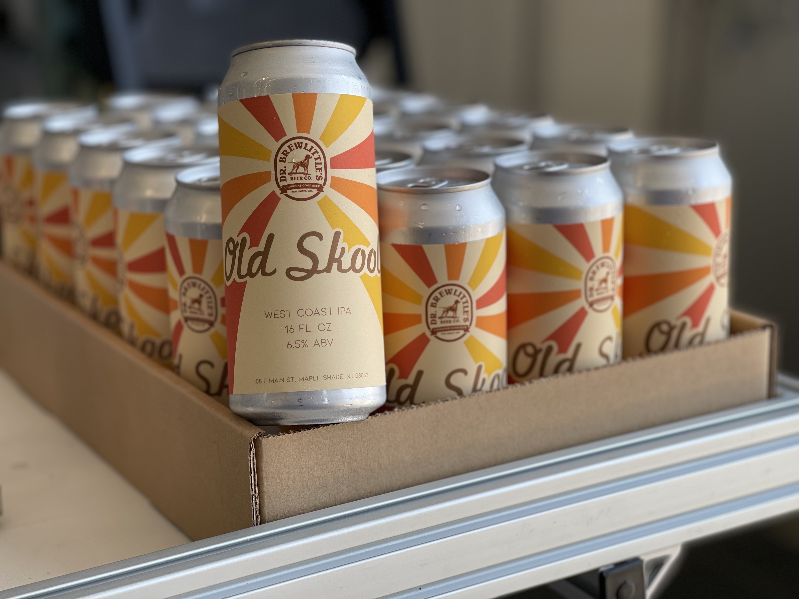
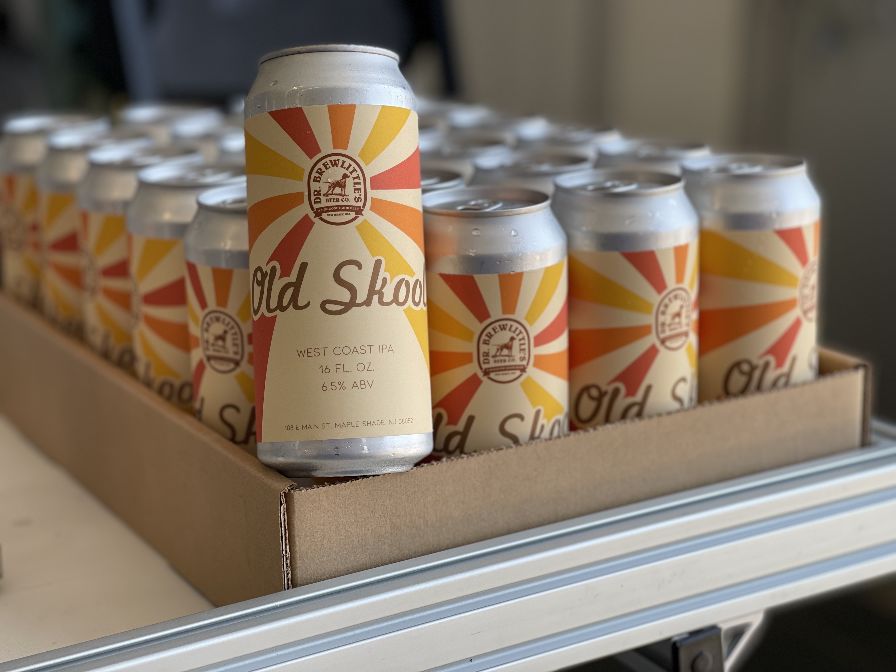

Dr. Brewlittle's Beer Co. in Maple Shade, NJ held a campaign allowing local artists to
design a line of beer labels. I had the opportunity to work on a project where I was
entrusted with complete creative freedom.
The task was to design a beer called "Old Skool" without any specific parameters
provided by the client. Drawing inspiration from the name itself, I decided to adopt a
classic 70s vibe with retro typography, and vibrant hues incoporated into the design.
 
